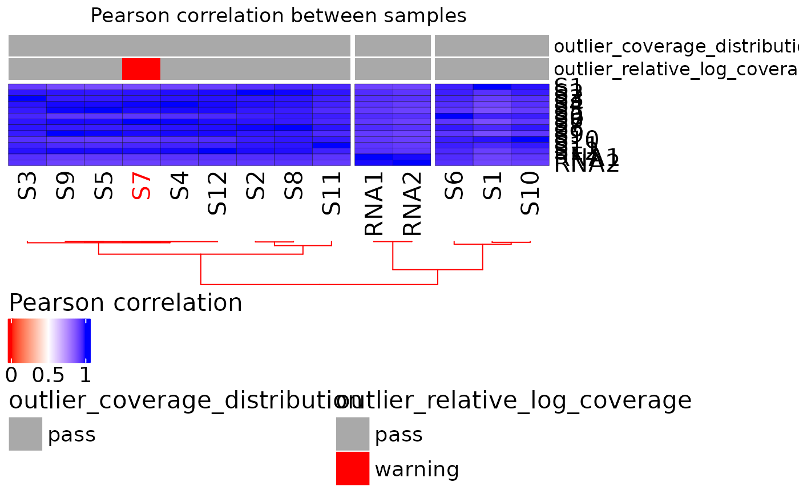

Plot a correlation heatmap from a RiboClass object
Source:R/plot_heatmap_annotated.R
plot_heatmap_annotated.RdShows the correlation distance between samples.
Examples
data("ribo_toy")
qcdata <- ribo_toy[[2]]
ribo_matrix <- extract_data(ribo_toy, "count", position_to_rownames = TRUE)
medcov <- apply(ribo_matrix,2,function(x) median(x,na.rm=TRUE))
qcdata <- cbind(qcdata,median_coverage=medcov[rownames(qcdata)])
qcdata$coverage_quality <- "pass"
qcdata$coverage_quality[qcdata$median_coverage < 100] <- "warning"
plot_rlc <- rRMSAnalyzer::plot_rlc(ribo_toy,show_outlier = TRUE)
mad <- plot_rlc$plot_env$mad
rlc_median <- as.vector(plot_rlc$plot_env$rlc_grouped$median)
keys <- as.vector(plot_rlc$plot_env$rlc_grouped$key)
outlier_table <- data.frame(key = keys, rlc_median = rlc_median)
outlier <- data.frame()
for (i in 1:nrow(outlier_table)) {
if(outlier_table$rlc_median[i] < mad) {
outlier <- rbind(outlier, outlier_table[i,])}}
qcdata$rlc_median <- outlier_table$rlc_median[match(qcdata$samplename, outlier_table$key)]
qcdata$rlc_median_quality <- "pass"
qcdata$rlc_median_quality[qcdata$rlc_median < mad] <- "warning"
qcdata$total_outliers <- rowSums(qcdata[, c("coverage_quality", "rlc_median_quality")] == "warning")
ribo_toy$metadata$outlier_level <- qcdata$total_outliers
qcdata$total_outliers <- as.character(qcdata$total_outliers)
plot_heatmap_annotated(ribo_toy, qcdata)
